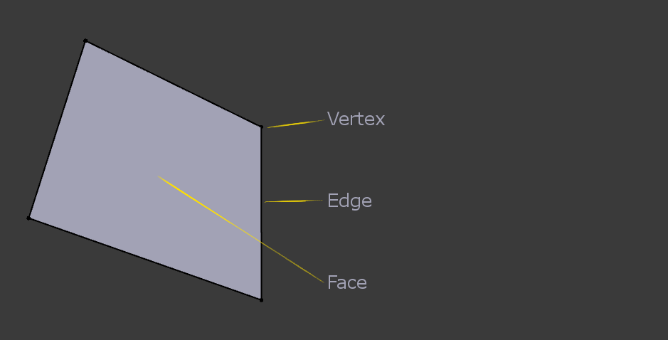

结构¶
对于一切网格，都是由三个基本结构构成的： 顶点，边 和 面。

网格结构示例。
顶点¶
网格中最基本的部分是3D空间中单独的点或位置。顶点存储在坐标数组中。
通常在渲染和 物体模式 中不可见。不要将对象的原点误认为顶点。它看起来很相似，但它更大，而且不能选中。
顶点示例。
原点被标记为“A”；“B”和“C”是顶点。
在上图中，标记为“C”的顶点是添加到立方体中的一个新的顶点，并且在“B”和“C”之间添加了一个新的边。
边¶
边是连接两个顶点之间的直线。当你在线框视图查看网格时边是“线”。这些线条通常不会出现在渲染图像上。它们用于构造面。
面¶
面是用于构造物体的真实表面。渲染网格后其实看到的就是这些面。如果某区域不包含面，则在渲染图像中将显示为透明的或不存在的。
三个(三角面)，四个(四边面)或更多(n边面)顶点之间的区域定义为面，每侧都有一条边，通常缩写为 tris，quads ＆ n-gons。
三角形总是平坦的，因此易于计算。另一方面，四边形 “利于形变”，因此常用于动画和细分建模。
尽管可以使用三角形面构建一个立方体，但是在 编辑模式 中会看起来很混乱。
循环¶
边和面循环。
边 和 面循环 是形成连续“循环”的一组面或边，如上图 边和面循环。 所示。顶行(1 - 4)为实体视图，底行(5 - 8)是相同循环的线框视图。
Note
请注意，循环(2和4)不能围绕整个模型。循环在所谓的极点上中断，因为没有从极点继续循环的路径。极点是连接到三个，五个或更多边的顶点。因此，与一条，两条或四条边连接的顶点不是极点。
在上图中，不在极点中断的循环是闭合的(1和3)。它们开始和结束的顶点是相同的，并将模型分成两个部分。在处理网格的特定连续区域时，循环是一个快捷和强大的工具，这也是活体角色动画的先决条件。有关如何在Blender中使用循环的详细说明，请参阅： 进阶选择 。